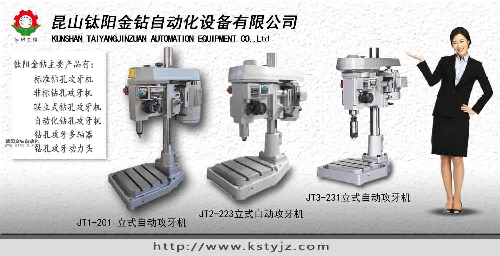
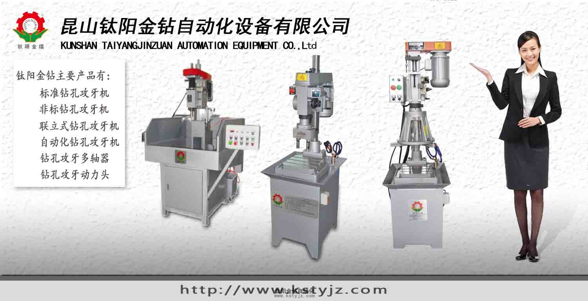
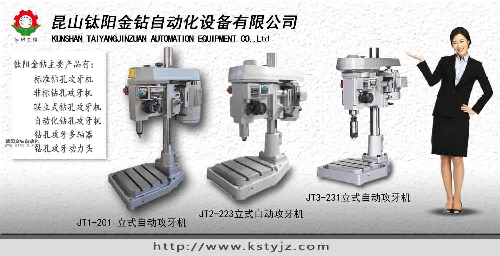
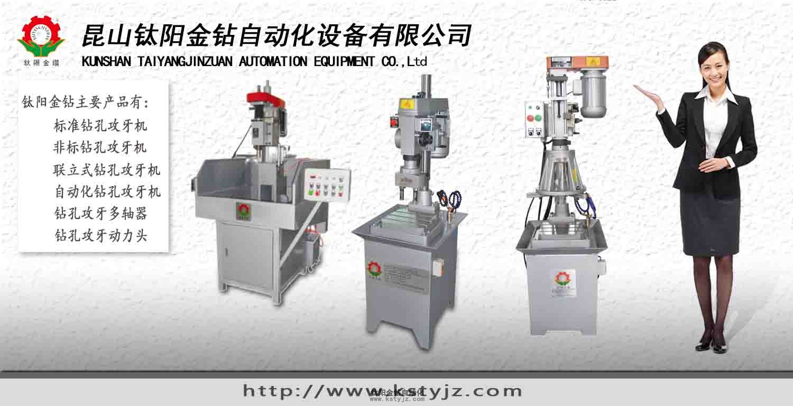

電動攻牙機,氣動攻牙機,自動攻牙機應用
文章出處：www.kstyjz.com責任編輯：kstyjz人氣：發表時間：2014-08-15 09:00
我們平時使用的攻牙機一般分為兩種制動方式，氣動攻牙機和電動攻牙機。它們各自都有自己的加工方式和特點，常規來說我們建議客戶使用電動攻牙機，因為電動攻牙機扭力較大加工範圍廣泛，而啟動攻牙機只是移動方便加工直徑大的優點，相對電動攻牙機扭力較小帶來的影響就是加工範圍較小。一些過硬的材質過深的盲孔氣動攻牙機則不適合加工。
電動攻牙機適用工件材質：
電動攻牙機可以在鉛、銅、A3鋼、鑄鐵、生鐵、Q235、45號鋼、S136模具鋼、718模具鋼、王牌料、NAK80模具鋼等金屬材料實現輕鬆攻絲作業。
電動攻牙機特點：
1、扭矩大小可調，不斷絲錐：在人機界面上根據攻絲的大小自行調節電機輸出扭力，扭力夾頭配備過載保護，雙重保險，真正做到不斷絲錐。
2、手動、自動互換攻絲，操作簡單化，智能化，人性化。
3、內置微電腦：每一組設置過的數據均可保存起來，以後再使用時直接調用，無須重新設置。
4、精密行星減速機台灣廠訂作，齒輪較市場上的標準件加大加長（耐磨），精密度高；
5、支架（平衡桿）採用高強度鋁合金，重複定位精確、輕便。
6、效率高，性能穩定，持續使用無障礙；
7、電動馬達為單相400W、600、750W、900W、1000W、1500W、2400W，全部採用220V單相交流伺服電機，能適應不同材質的工件，通孔、盲孔、不斷絲錐、絲牙精度高。
電動攻牙機適用領域：
電動攻牙機適用於所有機械製造行業，機床、模具機械、塑膠機械、印刷機械、包裝機械製造廠、工程機械、汽車摩托車零部件、航空發動機、機車車輛、煙草機械以及通用機械等行業。

新款氣動攻絲機避免了車床、鑽床或手動攻絲的局限，省時、省力、不易爛牙、絲錐不易折斷等。氣動攻絲機適用於所有機械製造行業，機床、模具(廠)機械、塑膠機械、印刷機械、包裝機械製造廠、工程機械、汽車摩托車零部件、航空發動機、機車車輛、煙草機械以及通用機械等行業。
氣動攻牙機的氣動馬達配上機械式手臂，最大工作半徑可以達到2000MM左右，可實現大工件及一個工件上多個孔位的時候，重複定位快，大大提高了工作效率，代替了手工攻絲。氣動馬達還可以配上帶有扭力保護的安全夾頭，可實現不斷絲錐提高了工件的加工品質。
氣動攻牙機特點：
1、壓縮空氣驅動，安全快速高效。
2、較小氣壓力和氣量(5-8Kg/cm2)，超大扭力輸出。
3、能對各種鋼材、鐵、銅、鋁、塑料等材料攻絲。
4、筒夾帶過載保護裝置，絲攻損傷較少，螺牙精度高。
5、操作簡單輕便，完全不需要經驗和力量。
6、加工成本較使用CNC加工中心，銑床帶攻絲器或手動攻絲低許多。
7、較重的工作物不需要定位裝置或移動，裝加萬向頭可輕鬆搞定。
8、定位迅速快和較高的切削速度，增加生產量。
9、透孔或盲孔，絲攻均不致斷裂、垂直、水平(萬向)角度均能攻絲。

1、速度快、精度高、攻出來的牙可通過牙規檢測。可作高速連續循環運轉，特殊馬達能持久耐用，可實現自動化， 牙距式自動攻牙機 一人可以同時操作多台設備，可顯著節約勞動力成本！ 2、工作原理：正轉---反轉---正轉---反轉……的連續循環和正轉---反轉---停止的單向循環有特定的按鍵開關來操作，還可以安裝腳踏開關，進行選擇性操作，連續、單向、循環都能自動。操作者雙手完全可以離開機器，實現自動工作，初學者也可以順利操作。 3、高精密攻牙行程調整簡單，自動反轉裝置能自由調整攻牙行程，淺孔和有孔低加工件也能容易調整，雙重安全裝置能防止螺絲攻之損壞，主軸回轉與上下、進退刀特設雙重安全離合器，主軸能自動停止，逆轉退刀也不會損壞刀具。
電動攻牙機
鈦陽金鑽自動化設備有多款自主開發的台式電動攻牙機標準機可供客戶選擇，台式標準攻牙機的特點就是加工通用的M10-M30甚至更大直徑的通孔盲孔制件，是一種標準製作的標配機型，以半自動化形式工作按點開關自動完成單孔的加工流程。電動攻牙機適用工件材質：
電動攻牙機可以在鉛、銅、A3鋼、鑄鐵、生鐵、Q235、45號鋼、S136模具鋼、718模具鋼、王牌料、NAK80模具鋼等金屬材料實現輕鬆攻絲作業。
電動攻牙機特點：
1、扭矩大小可調，不斷絲錐：在人機界面上根據攻絲的大小自行調節電機輸出扭力，扭力夾頭配備過載保護，雙重保險，真正做到不斷絲錐。
2、手動、自動互換攻絲，操作簡單化，智能化，人性化。
3、內置微電腦：每一組設置過的數據均可保存起來，以後再使用時直接調用，無須重新設置。
4、精密行星減速機台灣廠訂作，齒輪較市場上的標準件加大加長（耐磨），精密度高；
5、支架（平衡桿）採用高強度鋁合金，重複定位精確、輕便。
6、效率高，性能穩定，持續使用無障礙；
7、電動馬達為單相400W、600、750W、900W、1000W、1500W、2400W，全部採用220V單相交流伺服電機，能適應不同材質的工件，通孔、盲孔、不斷絲錐、絲牙精度高。
電動攻牙機適用領域：
電動攻牙機適用於所有機械製造行業，機床、模具機械、塑膠機械、印刷機械、包裝機械製造廠、工程機械、汽車摩托車零部件、航空發動機、機車車輛、煙草機械以及通用機械等行業。

氣動攻牙機
氣動攻牙機主要是通過高壓氣體來啟動器械內部的扇葉來帶動齒輪組旋轉，齒輪組再帶動主軸從而實現動力轉化的過程。氣動攻牙機跟電動攻牙機相同的一點就是都會在齒輪組內集成一個擦速片或扭力保護裝置，當刀具遇到卡削或異物時不至於造成直接的斷刀現象。新款氣動攻絲機避免了車床、鑽床或手動攻絲的局限，省時、省力、不易爛牙、絲錐不易折斷等。氣動攻絲機適用於所有機械製造行業，機床、模具(廠)機械、塑膠機械、印刷機械、包裝機械製造廠、工程機械、汽車摩托車零部件、航空發動機、機車車輛、煙草機械以及通用機械等行業。
氣動攻牙機的氣動馬達配上機械式手臂，最大工作半徑可以達到2000MM左右，可實現大工件及一個工件上多個孔位的時候，重複定位快，大大提高了工作效率，代替了手工攻絲。氣動馬達還可以配上帶有扭力保護的安全夾頭，可實現不斷絲錐提高了工件的加工品質。
氣動攻牙機特點：
1、壓縮空氣驅動，安全快速高效。
2、較小氣壓力和氣量(5-8Kg/cm2)，超大扭力輸出。
3、能對各種鋼材、鐵、銅、鋁、塑料等材料攻絲。
4、筒夾帶過載保護裝置，絲攻損傷較少，螺牙精度高。
5、操作簡單輕便，完全不需要經驗和力量。
6、加工成本較使用CNC加工中心，銑床帶攻絲器或手動攻絲低許多。
7、較重的工作物不需要定位裝置或移動，裝加萬向頭可輕鬆搞定。
8、定位迅速快和較高的切削速度，增加生產量。
9、透孔或盲孔，絲攻均不致斷裂、垂直、水平(萬向)角度均能攻絲。

自動攻牙機
自動攻牙機是在電動攻牙機、啟動攻牙機的台式攻牙機、立式攻牙機的基礎上通過電氣化安裝協調來實現機械的全自動加工流程，可以實現自動上料、自動定位、自動加工、自動走位、自動卸料的自動化流程工序。自動攻牙機甚至可以集合多個加工工序與多個攻位同時加工，以達到最大限度的加工流程完整度與自動化程度，減少了人工開銷提高了加工效率與加工質量。1、速度快、精度高、攻出來的牙可通過牙規檢測。可作高速連續循環運轉，特殊馬達能持久耐用，可實現自動化， 牙距式自動攻牙機 一人可以同時操作多台設備，可顯著節約勞動力成本！ 2、工作原理：正轉---反轉---正轉---反轉……的連續循環和正轉---反轉---停止的單向循環有特定的按鍵開關來操作，還可以安裝腳踏開關，進行選擇性操作，連續、單向、循環都能自動。操作者雙手完全可以離開機器，實現自動工作，初學者也可以順利操作。 3、高精密攻牙行程調整簡單，自動反轉裝置能自由調整攻牙行程，淺孔和有孔低加工件也能容易調整，雙重安全裝置能防止螺絲攻之損壞，主軸回轉與上下、進退刀特設雙重安全離合器，主軸能自動停止，逆轉退刀也不會損壞刀具。
上一篇：手動攻牙機和自動攻牙機的區別自動化程度 | 下一篇：攻牙機原理,多功能機床是什麼


推薦文章
- 影響電動攻牙機性能的
- 何以自動攻牙機可以做
- 攻螺紋前鑽底孔直徑和
- 鑽孔機如何選擇,台式自
- 攻牙油 百 科
- 自動鑽床自動攻牙機離
- SPS-全自動鑽孔倒角攻牙
- 攻牙機原理,多功能機床
- 動力頭基本構造及相關
- 自動攻牙機深孔。小孔